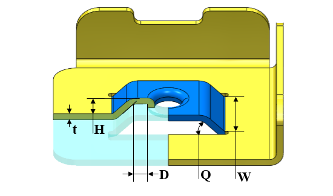

ブリッジランス上の曲げ部と押し出し穴との最小距離と板厚との比率は、推奨値に従う必要があります。
外観上の変形やバリの発生を防ぐため、ブリッジランス上の曲げ部と押し出し穴との最小距離を確保してください。
DFMPro は押し出し穴付きブリッジランスを識別し、曲げ部と押し出し穴との距離と板厚との比率を算出します。この比率は、構成された比率値と照合して検証されます。
ユーザーは、デフォルトで構成されている比率を編集できます。

ここで、
t = 板厚
D = ブリッジランス上の曲げ部と押し出し穴との最小距離
H = ブリッジ高さ
Q = ブリッジ角度
W = ブリッジ幅